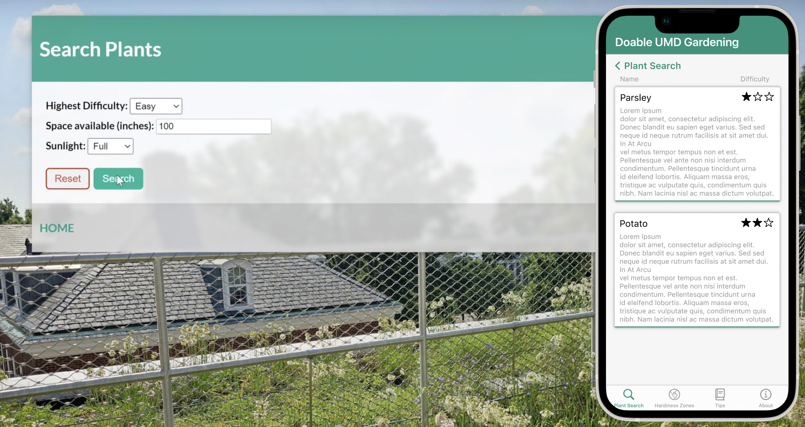
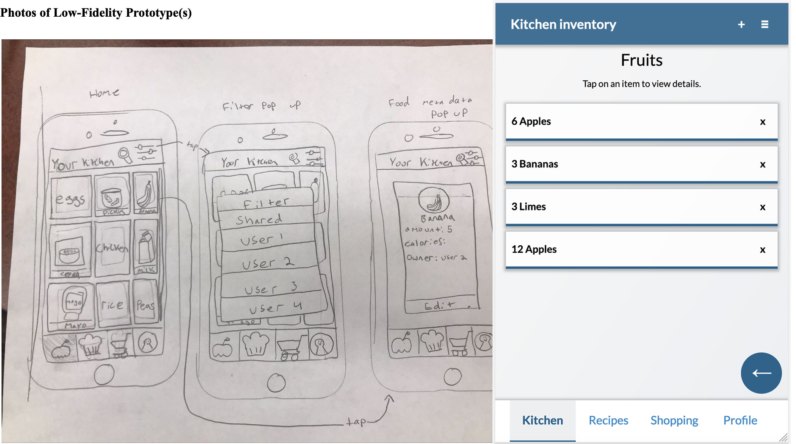
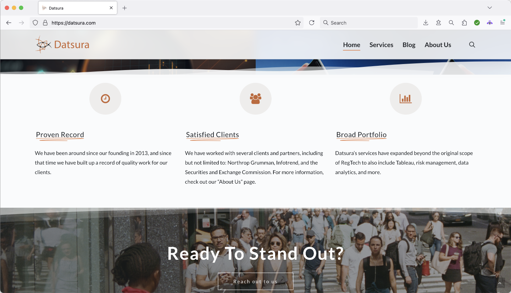

Here is my portfolio, where you can learn more about the kind of work I have been involved with. Scroll through to take a look at projects that I have worked on, both cooperatively and individually. Many of them relate directly to my coursework in the fields of computer science and journalism.
Click here to skip to my journalism work.
My Portfolio
Computer Science and Journalism work
Computer Science work
Fall 2024: G20 Metrics comparisons in Tableau
I collected data from the World Bank's Open Data site and used Tableau to visualize how different G20 nations (plus Spain) compare to each other on six different metrics. The visualization allows you to choose which metric to compare and also which country (if any) to use as the baseline (the relative zero).
Click here to view visualization
Fall 2024: Travelling Salesman Problem with Java
A program I wrote to solve the Travelling Salesman Problem using a genetic fitness algorithm that I created. More information is included in the comments in the code.
Click here to view (password available upon request)
Spring 2024: UMD Gardening web app
In a web application development course, I worked in a group to create a web app to help people search for plants that they could grow in their garden based on their desired parameters, such as space required, sunlight available, etc. To create this app, we used HTML/CSS, Javascript, ExpressJS with REST api, Node.js and MongoDB. I also created a Figma prototype for a hypothetical mobile port of the web app.
Click here to view GitHub repository
Spring 2024: Cyclopeptide Sequencing Problem with C++
A C++ program I wrote to solve a modified version of this problem. More information is included in the comments in the code.
Click here to view (password available upon request)
Fall 2023: Kitchen App for Human-Computer Interaction
As part of a group project for a human-computer interaction and UI/UX course, I helped to create a prototype of an app that could allow multiple people — such as roommates or family members — to catalog the food that they purchase, keep record of who bought what, store and share recipes and more. The app was conceptualized and wireframed in multiple stages, and then developed in HTML/CSS and javascript, and as per the assignment's instructions, it is only intended to be run at 640x960 viewport resolution. I was largely responsible for designing the front-end interface and layout across the app, and also contributed code to the backend javascript.
Link to the GitHub repository of my final edited version. Documentation of the UX design process is provided in pdf format in this repository.
Link to my groupmate's GitHub repository of an earlier version
Summer 2023: Datsura website
I completed a summer internship at Datsura where I created and designed a new website for them using WordPress and CSS.
Archived version on the Wayback Machine (not fully functional)
Spring 2023: Cybersecurity Group Project in C
While taking a cybersecurity course, I completed a group programming project whereby we had to design virtual Bank and ATM terminals and have them take in user input and communicate with each other, while also building in defenses to protect against a malicious third party intercepting, modifying or hijacking the communications between the ATM and Bank. This project was written in C. I was largely responsible for the code in atm.c, but I also contributed to other parts of the project.
Click here to view (password available upon request)
Fall 2022: Rust program
This is a programming assignment I completed in Rust in a programming languages course. The assignment specifications are included in the readme file.
Click here to view (password available upon request)
Fall 2021: Command line document processor in C
This is a command line document processor (and to some extent a word processor) that I wrote for a C programming course.
Click here to view (password available upon request)
Journalism work
Fall 2023: CNS-TV promo video
I played a part in filming and editing this promotional video for CNS-TV, the broadcasting channel of the Capital News Service at the University of Maryland. This video was produced as a group project for a promo production course.
Spring 2023: Animated informational video about electoral systems
A video I animated as the final project for a journalism course on motion graphics and data visualization
Spring 2023: Recreation of Vox animation
As part of my coursework for a motion graphics journalism class, I used Adobe Animate to recreate this animation sequence from a Vox video. The original sequence is played first, followed by my recreated version.
Fall 2022 - Spring 2023: Remade miscellaneous CNS-TV graphics
During my time as a student working on CNS-TV, I remade some of the graphics used on the show. Most of my remade graphics are still being used on the broadcast. Additionally, I had variously been a camera operator, floor director and graphics operator on the show.

{kind=link}
{kind=link}
{kind=link}
{kind=link}
{kind=link}
{kind=link}
{kind=link}
Fall 2022: CNS-TV election night graphics and animations
On election night in 2022, I was in charge of producing graphics, graphics templates and animations for the show. This also involved producing graphics in real time based on the latest election board information that was coming in. I created the red/blue wipe animation in After Effects on very short notice.

Summer 2022: Remade news article with my own info graphics and web design
As part of the final assignment for a data visualization class, I readapted a New York Times article about the then-impending resignation of Boris Johnson into my own website design with my own data graphics and design.
Spring 2022: News videography story
A news story I filmed and edited where I interviewed my friend about his experiences with celiac disease and its impact on his life.
Spring 2022: Short non-narrated news videography story
A short non-narrated news story about a student music club at UMD and its history. I edited the video in addition to collaboratively filming and researching it with my classmate.
Summer 2021: News reporting writing sample
A news story I wrote in AP style for a news writing and reporting course.
Fall 2019: High school newspaper promo video
A promotional video I directed, filmed and edited in order to help promote my high school's newspaper.